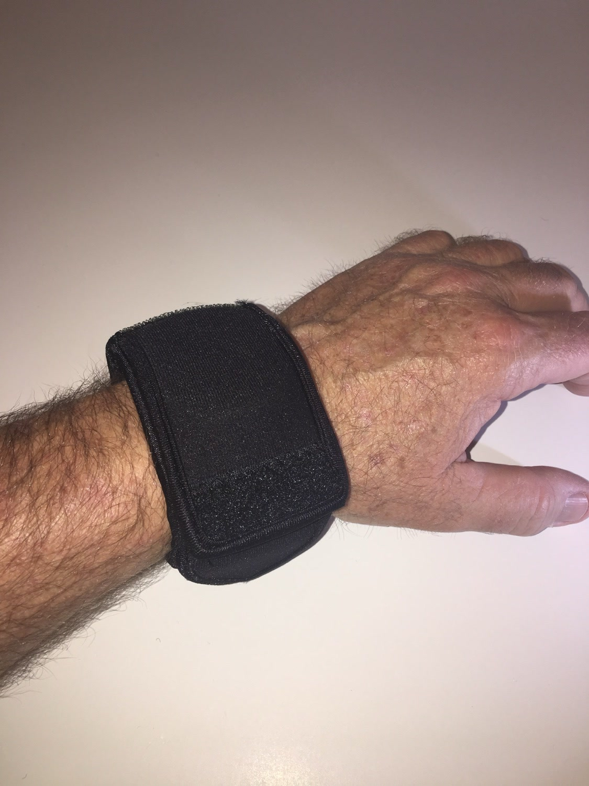

From the blog
Night OP's Black: Low Profile Protection for Everyday Carry
October 13, 2026

Some gear is meant to be seen. Some is meant to disappear. Night OP's Black is the second kind. It is the WATCH-ET sleeve in solid black neoprene, and it is the pick for anyone who wants watch protection without flash.
1. It goes with everything
Black works with a work shirt, a uniform, gym clothes, and a night out. Bright colors are fun, but when the watch itself is the star, the sleeve should stay quiet. Night OP's Black never clashes and never draws the eye.
2. Black hides daily grime
Trail dust, shop grease, and pocket lint show up fast on light colors. Black shrugs it off. If your sleeve is going to live on your wrist through real work, black stays looking clean the longest.
3. Built for the everyday carry mindset
Everyday carry is about tools you trust and use daily. Your watch is one of those tools. The sleeve treats it that way: neoprene that guards against knocks and scrapes, a flap that folds over the face, and a side pocket for small essentials.
4. From the office to the field
Desk work grinds the case against the desk edge all day. Field work is worse. One sleeve covers both. Slide it on in the morning, wear it through the workday, and your watch looks the same at quitting time as it did at breakfast.
5. Travel ready
One sleeve protects any watch you pack. Toss the sleeved watch in your bag and it rides safe between clothes instead of rattling against zippers and buckles. If you travel with more than one watch, one sleeve per watch keeps them from scratching each other.
Night OP's Black is for the person who buys gear once and uses it hard. No flash, no fuss, just a black neoprene sleeve that keeps a good watch looking good.
Tired of babying your watch?
Medium $23 fits watches up to 48mm. Large $25 fits up to 53mm. Five colors.
Order Yours More Tips